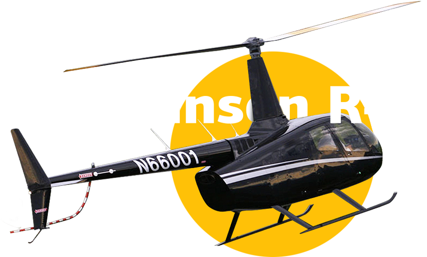

Первоначальная подготовка
| Летная подготовка: | не менее 43 часов |
| Теоретические знания: | 232 часа |
| Зачет-экзамен: | 15 ч |
Эта программа позволит вам получить знания и навыки для самостоятельного управления вертолётом Robinson R44 в качестве КВС.
Продолжительность занятий 232 часа, в которые входят:
- Практическая аэродинамика
- Конструкция вертолета
- Конструкция двигателя
- Электрооборудование
- Приборное оборудование
- Радиооборудование
- Руководство по летной эксплуатации
- Воздушная навигация - Вертолетовождение
- Ведение радиосвязи и фразеология АССП и его размещение на ВС
- Авиационная метеорология
- Авиационная медицина
- Документы, регламентирующие летную работу
Каждый пилот имеет летный стаж 7 000 часов, и поможет изучить программу упражнений. Вам предоставляется 40 часов, чтобы с увереностью выполнять:
- Полеты на висение, перемещения и развороты у земли
- Полеты по кругу
- Полеты в пилотажной зоне
- ПОлеты по маршруту
- Полеты на отработку действий командира ВС при попадании в аварийные ситуации полета
1972 год рождения
Общий налет: более 5000 часов
Образование: Сызранское авиационное летное училище
1995 год
Освоенные вертолеты: Robinson R44, Robinson R66, Airbus Helicopter H125, Bell 407, Agusta Westland 119, Ми-24, Ми-8
1972 год рождения
Общий налет: более 5000 часов
Образование: Сызранское авиационное летное училище
1995 год
Освоенные вертолеты: Robinson R44, Robinson R66, Airbus Helicopter H125, Bell 407, Agusta Westland 119, Ми-24, Ми-8
1972 год рождения
Общий налет: более 5000 часов
Образование: Сызранское авиационное летное училище
1995 год
Освоенные вертолеты: Robinson R44, Robinson R66, Airbus Helicopter H125, Bell 407, Agusta Westland 119, Ми-24, Ми-8
1972 год рождения
Общий налет: более 5000 часов
Образование: Сызранское авиационное летное училище
1995 год
Освоенные вертолеты: Robinson R44, Robinson R66, Airbus Helicopter H125, Bell 407, Agusta Westland 119, Ми-24, Ми-8
Первый вертолет с газотурбинным двигателем в линейке Robinson. Мощный высокопроизводительный двигатель Rolls-Royce RR300 был разработан специально для Robinson R66 turbine. Helicopter Company позаботилась о комфорте и безопасности пассажиров. Хорошую видимость обеспечивает отсутствие перегородки между сиденьями. Вертолет обладает отличными летно-техническими характеристиками и улучшенными показателями скорости набора высоты.
По окончании программы обучения выдаётся свидетельство о прохождении «Программы первоначальной подготовки частных пилотов на вертолёт Robinson R66», для получения в ВКК (ТКК) ФАВТ Росавиация свидетельства пилота любителя гражданской авиации (ГА).
- Копия паспорта
- Копия диплома об образовании
(не ниже среднего) - Медицинская справка о прохождении ВЛЭК
- Фотографии 4x5, 4 шт. (цветные, матовые, без уголков, в костюме)
Для деловой поездки, загородного полета или романтической вертолетной прогулки по Подмосковью мы разработаем индивидуальный маршрут, ориентируясь на Ваши пожелания. Где можно покататься на вертолете в знаменательный день, как арендовать вертолет для загородного отдыха, каким образом организовать деловой перелет – узнайте у специалистов Heliport Moscow.
Для деловой поездки, загородного полета или романтической вертолетной прогулки по Подмосковью мы разработаем индивидуальный маршрут, ориентируясь на Ваши пожелания. Где можно покататься на вертолете в знаменательный день, как арендовать вертолет для загородного отдыха, каким образом организовать деловой перелет – узнайте у специалистов Heliport Moscow.
Для деловой поездки, загородного полета или романтической вертолетной прогулки по Подмосковью мы разработаем индивидуальный маршрут, ориентируясь на Ваши пожелания. Где можно покататься на вертолете в знаменательный день, как арендовать вертолет для загородного отдыха, каким образом организовать деловой перелет – узнайте у специалистов Heliport Moscow.
Для деловой поездки, загородного полета или романтической вертолетной прогулки по Подмосковью мы разработаем индивидуальный маршрут, ориентируясь на Ваши пожелания. Где можно покататься на вертолете в знаменательный день, как арендовать вертолет для загородного отдыха, каким образом организовать деловой перелет – узнайте у специалистов Heliport Moscow.
Программа первоначальной подготовки пилотов на Robinson R44. Вы любите небо и хотите самостоятельно научиться управлять винтокрылой машиной?